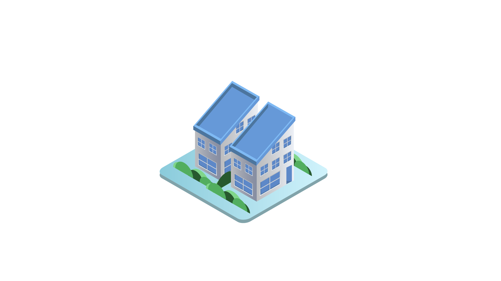

Apartment Living
Worried that you don't have enough room to make a difference nor the time to have another job in the city?

Residential Living
Most of us always assumed the garden in your backyard was limited to the patch on the side of your home.

Vertical Farming Facility
Have you found all of your investors? Have you worked through the business plan? Lets give you a canvas to grow on!